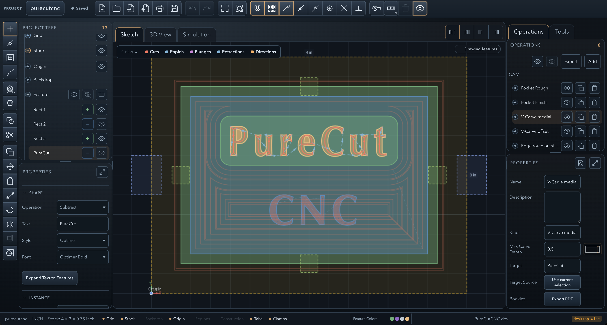
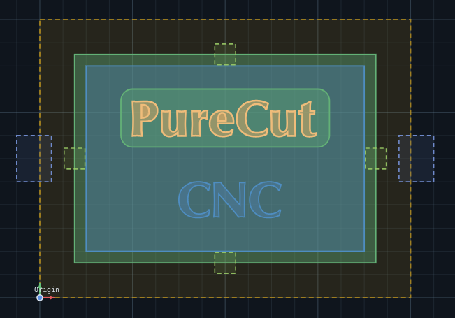
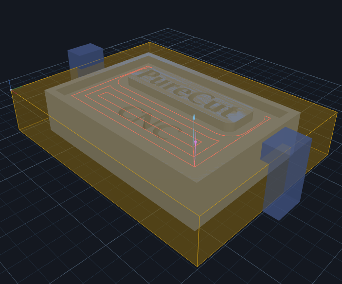
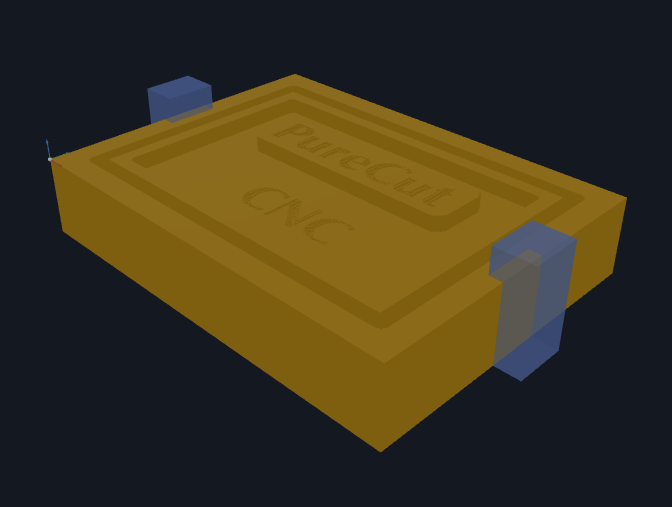
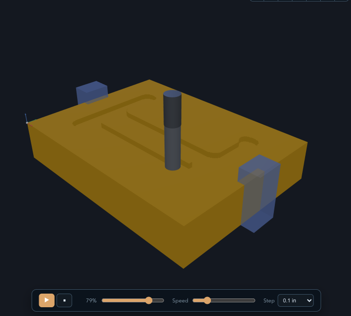

PureCut CNC is a 2.5D + 3D CAD/CAM workspace for designing parts, defining machining operations, and verifying toolpaths — before you cut a single chip. It runs on macOS, Windows, and Linux as a native desktop app, or in the browser. No registration, no cloud project storage. New here? Follow the Quick Start guide to go from a blank project to exported G-code in minutes.
The browser app needs a tablet or desktop. On phones, use Desktop Downloads above.


Sketch — canvas & feature tree

3D View — toolpath preview

3D View — machined result
From geometry to G-code — draw, import, assign operations, preview in 3D, simulate material removal, and export when it looks right.
Rectangles, circles, ellipses, polygons, splines, composite profiles, and text features — all editable directly on the canvas with snapping, measurements, and direct node editing.
Import 2D source geometry from SVG or DXF with Auto, Paths, and Solid-regions modes and nesting-aware Add/Subtract classification, or bring in 3D models from STL and OBJ files. Multi-body meshes split into one feature per body automatically. Imported geometry can be transformed and machined like hand-drawn features.
Pocket, edge route inside/outside with optional rounded outside corners, drill, V-Carve offset, V-Carve medial, surface clean, and engrave for 2.5D parts — plus 3D Surface rough, finish (parallel or waterline), and cleanup for imported models. Rough and finish passes, rest machining, hole-capable region masks to limit where any operation cuts, tabs, clamps, and per-tool feeds and speeds throughout.
Live CSG evaluation builds a 3D solid from your feature tree. Inspect entry/exit points and toolpath direction before cutting, then export the assembled model as STL (binary or ASCII) with selectable curve quality.
Replay toolpaths against stock in a fully GPU-rendered heightfield simulation. The cut state lives in a texture and is displaced in a vertex shader, with incremental per-frame updates — high-density grids (up to 1500 cells) stay interactive while you scrub, with a live XYZ readout in the playback bar.
Export clean G-code for Grbl, GrblHAL, LinuxCNC, and Mach3. Post-processor support for custom machine configurations. Preview with syntax highlighting before you download.
Text is an editable feature, not exploded letter geometry. Single-line text with skeleton and outline styles, built-in font selection, and full transform support.
Import an STL or OBJ model and generate 3D rough, finish (parallel or waterline), and targeted cleanup toolpaths directly from it. Overhang protection, region clipping, surrounding-feature avoidance, gouge protection, and adaptive waterline refinement for steep walls all included.
Edge route operations automatically generate rest regions so you can follow up with a smaller tool and clean up what the first pass left behind.
Define your endmills, ball mills, V-bits, and drills once. Assign tools to operations and override feeds and speeds per operation as needed.
Duplicate a feature as a linked reference and they share one geometry definition — edit the shape once and every instance updates. Make any copy unique to break the link when it needs to differ.
Generate involute spur gears from a dedicated creation workflow — set module, tooth count, and pressure angle, and the result is an editable feature you can machine like any other profile.
Add sketch-only reference features — layout guides and helper geometry that stay out of the solid model and never generate toolpaths, so you can build accurate drawings without affecting the cut.
Print the 2D design with CAD-style paper, scale, and margin controls, or export the design as SVG for documentation and downstream vector tools.
Edit, duplicate, and export machine definitions in-app. A focused form covers the common fields with a raw-JSON escape hatch, and live validation stops you saving a broken post-processor.
No installation, no registration, and no cloud-stored project data. Open the app in a modern desktop browser when a quick session is faster than a download — or use one of the native desktop builds.
Tablet shell layout activates automatically on touch devices with a vertical tool rail, drawer-based panels, snap popover, and pinch / two-finger pan / long-press gestures. Constraint creation, dimension entry, and feature placement all run from canvas workflow panels designed for touch.
Native desktop apps for Windows, macOS, and Linux, alongside the browser version. Same project files everywhere — work offline and keep everything local. Grab the latest from the Downloads page.
A focused set of 2.5D operations — including drilling where it matters — each with rough and finish variants, configurable tooling, and toolpath preview.
A linear workflow that mirrors how machinists think — geometry first, operations second, verify before you cut.
Set your stock dimensions, material, and profile boundary. Any shape — rectangular plate or irregular casting.
Draw geometry directly on canvas, import SVG, DXF, STL or OBJ, pull in folders from another .camj project, or trace from a backdrop image. 2D imports become editable sketch features; 3D meshes become Model features for 3D operations.
Reorder features in the feature tree. The CSG evaluation order determines what material gets removed or added — get it right visually before moving on.
Select geometry, pick an operation type, configure tool, stepdown, stepover, and strategy. Repeat for each operation.
Preview in 3D. Run the simulation and watch material come off. Check tabs, islands, and carving behavior match expectations.
Choose your machine controller, preview the G-code output, and download the .nc file when it looks right.
Switch between views as your work progresses. All three stay in sync with the same project state.
Primary drawing surface. Edit geometry, inspect 2D toolpath projections, check snapping and feature ordering.
CSG-evaluated solid derived from your feature tree. Inspect toolpaths spatially — entry/exit points, path direction, depth layers.
GPU-rendered heightfield replay. Scrub through the toolpath sequence — with a live XYZ readout — to catch problems before they hit the spoilboard.

Playback makes the simulation view useful for more than a final beauty shot. Scrub through the cut order to catch rapid moves, drilling sequence, tab behavior, and material removal issues before you export G-code.
No account. No remote project storage. Download a native desktop build for macOS, Windows, or Linux — or open the browser version for a quick start.
The browser app needs a tablet or desktop. On phones, use Desktop Downloads above.
PureCut CNC is in active development and your input shapes what gets built next. If something isn't working, feels off, or you have a feature you'd love to see — open an issue on GitHub. All feedback is welcome.
Open an Issue on GitHub